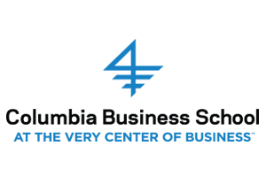
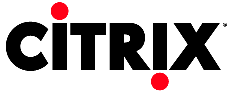

Work Experience

Columbia Business School
Project Assistant, Accounting. (2016 - Present)

Citrix Research and Development
Software Engineer 2 (2014-2016)

PayPal
Software Intern (Jan 2014 - Jun 2014)